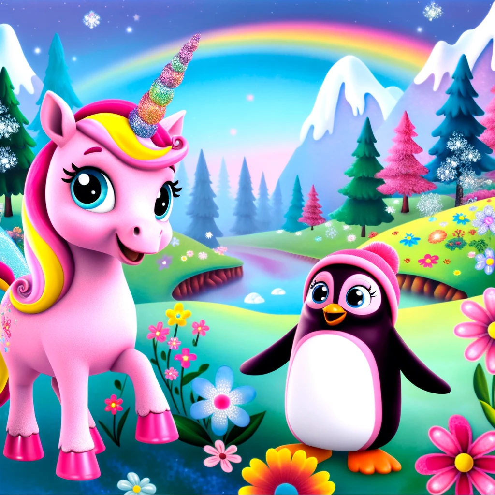

Estrella y Pingu: La Aventura en el Reino de Fantasía

Había una vez, en un reino mágico llamado Fantasía, un unicornio rosa llamado Estrella. Estrella tenía un pelaje brillante y un cuerno que destellaba con los colores del arco iris. Era conocido por su bondad y por siempre estar dispuesto a ayudar a los demás.
Un día, mientras paseaba por los campos floridos, Estrella encontró a una pequeña pingüinita rosa llamada Pingu. Pingu estaba lejos de su hogar en el Polo Sur y se sentía un poco perdida. Estrella, con su corazón generoso, decidió ayudar a Pingu a encontrar su camino de regreso.
Los dos nuevos amigos emprendieron una aventura maravillosa. Atravesaron bosques encantados, volaron sobre montañas nevadas y cruzaron ríos de chocolate. A lo largo del viaje, Estrella y Pingu se hicieron inseparables. Estrella enseñó a Pingu a deslizarse por las colinas de azúcar y Pingu mostró a Estrella cómo nadar en los lagos de gelatina.
Un día, llegaron a un hermoso valle cubierto de flores de colores. En el centro del valle, encontraron un portal mágico que llevaba directamente al Polo Sur. Pero Pingu se dio cuenta de que ya no quería irse. Había encontrado un verdadero amigo en Estrella y deseaba quedarse en Fantasía.
Estrella y Pingu decidieron que, en lugar de separarse, podían hacer del reino de Fantasía su hogar. Juntos, crearon un maravilloso jardín donde todos los animales mágicos podían venir a jugar y disfrutar. Había toboganes de hielo para los pingüinos, campos de flores para los unicornios y muchos lugares mágicos para explorar.
Y así, Estrella y Pingu demostraron que la verdadera amistad puede superar cualquier obstáculo y hacer cualquier lugar un hogar feliz. Desde entonces, vivieron muchas más aventuras juntos, siempre con una sonrisa en el rostro y alegría en el corazón.
Y colorín colorado, este cuento se ha acabado. Buenas noches, Alondra. ¡Dulces sueños!